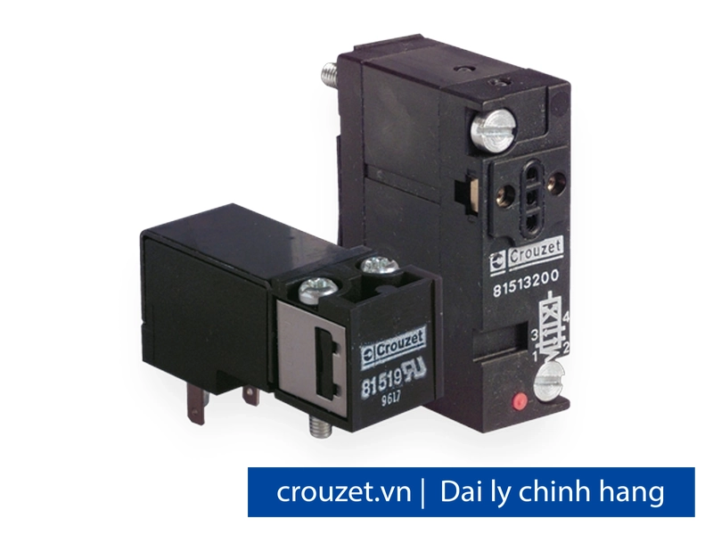
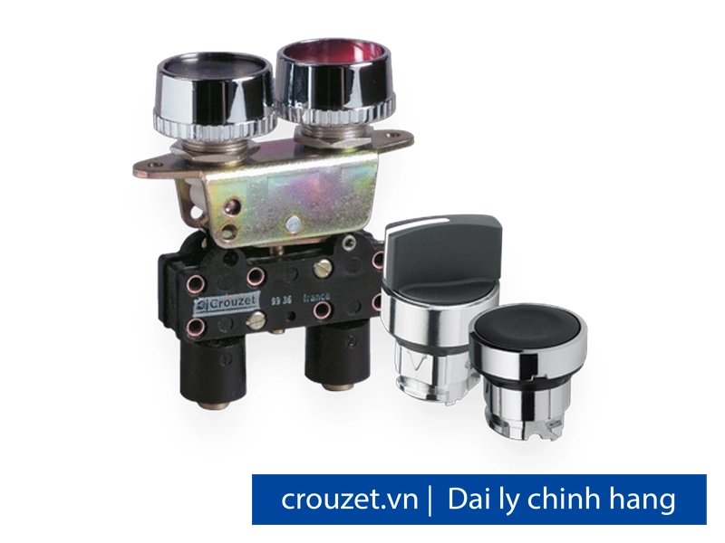
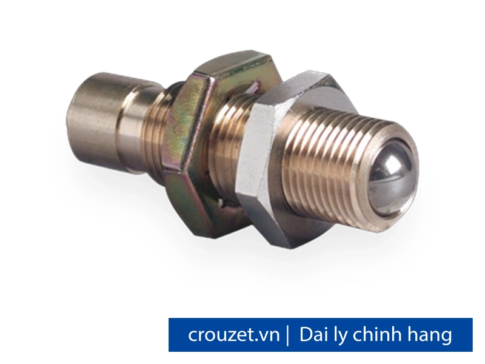
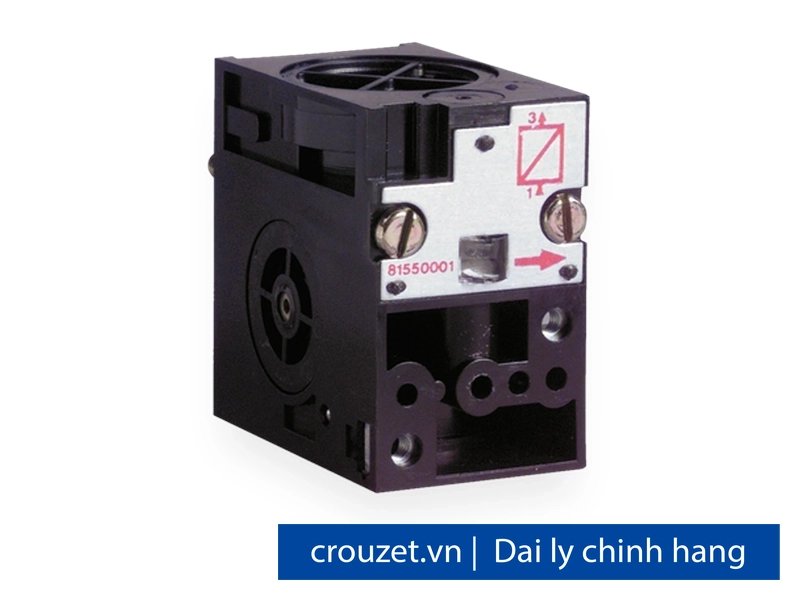
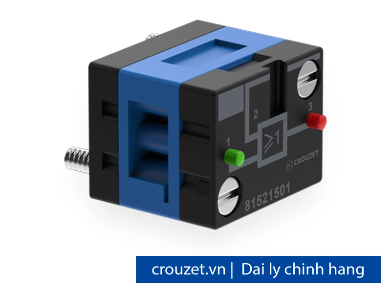
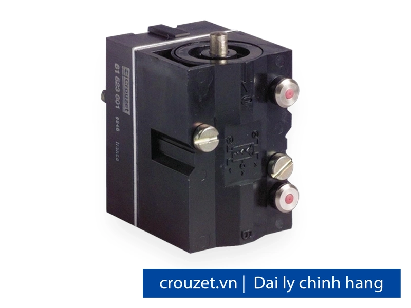
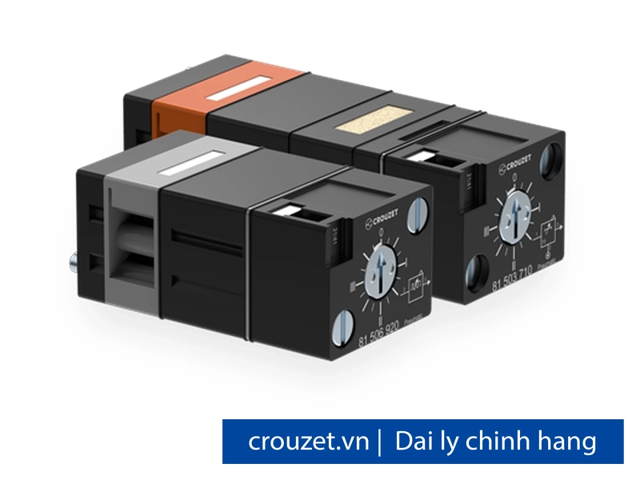
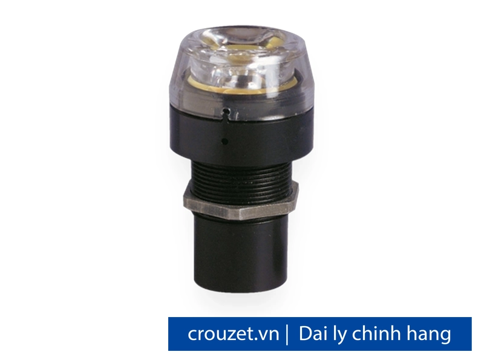

Thiết bị khí nén (Pneumatics) Crouzet chính hãng
Thiết bị khí nén Crouzet chính hãng, phân phối bởi Fast Group tại Việt Nam. Đầy đủ van tay, van điện từ, logic khí nén, công tắc áp suất, cảm biến vị trí và van đa lưu chất — nhiều phiên bản ATEX. Giấy tờ đầy đủ CO, CQ, hóa đơn VAT.

Các model thiết bị khí nén Crouzet
Chọn model để xem thông số chi tiết và yêu cầu báo giá. Cần hỗ trợ chọn nhanh theo thông số kỹ thuật, gửi yêu cầu cho đội kỹ thuật Fast Group.

Van tay (Manual Actuated Valves) · Van 3/2 NC – thường đóng
Van tay (Manual Actuated Valves) · Van 3/2 NC – thường đóng
Van tay (Manual Actuated Valves) · Van 3/2 NO – thường mở
Van tay (Manual Actuated Valves) · Van 3/2 NC đầu bấm kép
Van tay (Manual Actuated Valves) · Van 3/2 NC – cần gạt 3 vị trí trả lò xo
Van tay (Manual Actuated Valves) · Van 3/2 NO – cần gạt 3 vị trí trả lò xo
Van tay (Manual Actuated Valves) · Van 3/2 NC – cần gạt 3 vị trí duy trì
Van tay (Manual Actuated Valves) · Van 3/2 NO – cần gạt 3 vị trí duy trì
Van tay (Manual Actuated Valves) · Detector vị trí microvalve – đầu ra ngang NC
Van tay (Manual Actuated Valves) · Detector vị trí microvalve – đầu ra ngang NO
Van tay (Manual Actuated Valves) · Detector vị trí microvalve – đầu ra dọc NC
Van tay (Manual Actuated Valves) · Detector vị trí microvalve – đầu ra dọc NO
Van tay (Manual Actuated Valves) · Detector microvalve NC cần đòn ngắn
Van tay (Manual Actuated Valves) · Detector microvalve NC đầu bi
Van tay (Manual Actuated Valves) · Detector microvalve NC con lăn trip
Van tay (Manual Actuated Valves) · Detector microvalve NC cần đòn con lăn
Van tay (Manual Actuated Valves) · Van 3/2 NC lắp trên tay gạt Ø22
Van tay (Manual Actuated Valves) · Van 3/2 NO lắp trên tay gạt Ø22
Van tay (Manual Actuated Valves) · Rơle điều khiển 2 tay theo EN 574, loại IIIA
Van tay (Manual Actuated Valves) · Rơle điều khiển 2 tay theo EN 574, loại IIIB – kết nối tubing Ø4
Van tay (Manual Actuated Valves) · Module khởi động an toàn 2 tay tích hợp rơle IIIA
Van tay (Manual Actuated Valves) · Module khởi động an toàn 2 tay tích hợp rơle IIIB
Van tay (Manual Actuated Valves) · Totalizer 6 chữ số, không có reset về 0
Van tay (Manual Actuated Valves) · Totalizer 4 chữ số, reset bằng tay
Van tay (Manual Actuated Valves) · Preset counter 5 chữ số, reset khí nén hoặc tay
Van tay (Manual Actuated Valves) · Đèn báo tín hiệu khí nén màu đỏ Ø22
Van tay (Manual Actuated Valves) · Đèn báo tín hiệu khí nén màu xanh lá Ø22
Van tay (Manual Actuated Valves) · Đèn báo tín hiệu khí nén màu vàng Ø22
Van tay (Manual Actuated Valves) · Đèn báo tín hiệu khí nén màu xanh dương Ø22
Van tay (Manual Actuated Valves) · Van 3/2 NC điều khiển bằng chân đạp

Cảm biến vị trí (Position Detectors) · Detector vị trí khí nén lực thấp <50g tại 6 bar – NC
Cảm biến vị trí (Position Detectors) · Detector vị trí khí nén lực thấp – NO
Cảm biến vị trí (Position Detectors) · Detector vị trí khí nén miniature piston đơn – NC, thân zamak
Cảm biến vị trí (Position Detectors) · Detector vị trí miniature cần đòn con lăn nhựa – NC
Cảm biến vị trí (Position Detectors) · Detector vị trí miniature cần đòn con lăn vòng bi – NC
Cảm biến vị trí (Position Detectors) · Detector miniature cần đòn con lăn một chiều – NC
Cảm biến vị trí (Position Detectors) · Detector vị trí compact đầu quay phải con lăn – NC
Cảm biến vị trí (Position Detectors) · Detector compact piston con lăn không ren – NC
Cảm biến vị trí (Position Detectors) · Detector vị trí khí nén dừng điều chỉnh – barb 2.7×4
Cảm biến vị trí (Position Detectors) · Detector khí nén kết hợp relay, lực tác động 0.8N, đầu bi
Cảm biến vị trí (Position Detectors) · Detector khí nén kết hợp relay, lực cực thấp 30mN, đầu dây

Cảm biến vị trí (Position Detectors) · Cảm biến tiếp cận khí nén dải 6–10mm, Ø12
Cảm biến vị trí (Position Detectors) · Cảm biến khe hở khí nén 18mm, kết hợp amplifier
Cảm biến vị trí (Position Detectors) · Cảm biến khe hở khí nén khoảng cách 100mm

Công tắc áp suất (Pressure Switches) · Pressure switch điện, lắp DIN Rail, có cần bật tay
Công tắc áp suất (Pressure Switches) · Pressure switch điện, lắp DIN Rail, không cần bật tay
Công tắc áp suất (Pressure Switches) · Pressure switch điện áp thấp 0.3→1.2 bar, DIN Rail
Công tắc áp suất (Pressure Switches) · Vacuum switch điện, điều chỉnh -0.3→-0.8 bar
Công tắc áp suất (Pressure Switches) · Pressure switch điện gắn base, kín IP54
Công tắc áp suất (Pressure Switches) · Pressure switch điện gắn base, có manual override, IP54
Công tắc áp suất (Pressure Switches) · Công tắc áp suất khí nén điều chỉnh 50–500mb, đầu ra dương
Công tắc áp suất (Pressure Switches) · Công tắc áp suất khí nén điều chỉnh 0.1–2.5 bar
Công tắc áp suất (Pressure Switches) · Công tắc áp suất khí nén điều chỉnh 2–8 bar
Công tắc áp suất (Pressure Switches) · Công tắc áp suất 50–500mb, đầu ra âm (tắt khi đạt ngưỡng)
Công tắc áp suất (Pressure Switches) · Công tắc áp suất 0.1–2.5 bar, đầu ra âm
Công tắc áp suất (Pressure Switches) · Công tắc áp suất 2–8 bar, đầu ra âm
Công tắc áp suất (Pressure Switches) · Vacuostat khí nén điều chỉnh -0.1 → -0.9 bar, đầu ra dương
Công tắc áp suất (Pressure Switches) · Vacuostat khí nén -0.1→-0.9 bar, đầu ra âm
Công tắc áp suất (Pressure Switches) · Vacuostat -0.1→-0.9 bar, đầu ra điện (microswitch)
Công tắc áp suất (Pressure Switches) · Bộ tạo chân không Venturi, lắp sub-base
Công tắc áp suất (Pressure Switches) · Bộ tạo chân không Venturi plug-in Ø4
Công tắc áp suất (Pressure Switches) · Bộ tạo chân không Venturi plug-in Ø6, lưu lượng lớn hơn

Logic khí nén (Pneumatic Logic) · Sequencer 100% khí nén, bộ nhớ duy trì, không cần điện
Logic khí nén (Pneumatic Logic) · Sequencer 100% khí nén, reset về zero
Logic khí nén (Pneumatic Logic) · Shift register 100% khí nén, bộ nhớ duy trì
Logic khí nén (Pneumatic Logic) · Shift register 100% khí nén, reset về zero
Logic khí nén (Pneumatic Logic) · Sub-base cho module sequencer, lắp DIN omega, kết nối phía trước
Logic khí nén (Pneumatic Logic) · Sub-base cho module sequencer, lắp clip, kết nối phía sau

Logic khí nén (Pneumatic Logic) · Phần tử logic khí nén OR và AND, lắp sub-base, màu xanh dương
Logic khí nén (Pneumatic Logic) · Phần tử logic OR/AND plug-in Ø4mm, xanh dương
Logic khí nén (Pneumatic Logic) · Phần tử logic OR/AND plug-in Ø6mm, xanh dương
Logic khí nén (Pneumatic Logic) · Phần tử logic AND riêng biệt, lắp sub-base, màu xanh lá
Logic khí nén (Pneumatic Logic) · Phần tử logic AND plug-in Ø4mm
Logic khí nén (Pneumatic Logic) · Phần tử logic YES khí nén, lắp sub-base, màu cam
Logic khí nén (Pneumatic Logic) · Phần tử logic NOT khí nén, lắp sub-base, màu vàng

Logic khí nén (Pneumatic Logic) · Phần tử nhớ (bistable) 4/2 khí nén, có đèn báo áp suất
Logic khí nén (Pneumatic Logic) · Phần tử nhớ bistable 4/2, có manual override và đèn báo

Logic khí nén (Pneumatic Logic) · Timer khí nén cố định 0.4 giây, đầu ra dương
Logic khí nén (Pneumatic Logic) · Timer khí nén điều chỉnh 0.1–15 giây, đầu ra dương
Logic khí nén (Pneumatic Logic) · Timer khí nén điều chỉnh 0.1–15 giây, đầu ra âm
Logic khí nén (Pneumatic Logic) · Timer khí nén 0.1–30 giây đầu ra dương
Logic khí nén (Pneumatic Logic) · Timer khí nén 0.1–60 giây đầu ra dương
Logic khí nén (Pneumatic Logic) · Bộ tạo xung đơn khí nén 0.4 giây cố định
Logic khí nén (Pneumatic Logic) · Bộ tạo xung đơn khí nén điều chỉnh 0.1–30s
Logic khí nén (Pneumatic Logic) · Bộ tạo xung lặp điều chỉnh tần số 0.02–8 Hz
Van điện từ (Solenoid Valves) · Van điện từ miniature 3/2 NC, 24V AC 50-60Hz, không manual override
Van điện từ (Solenoid Valves) · Van điện từ miniature 3/2 NC, 24V AC, manual override kiểu xung
Van điện từ (Solenoid Valves) · Van điện từ miniature 3/2 NC, 24V AC, manual override latching 1/4 vòng
Van điện từ (Solenoid Valves) · Van điện từ miniature 3/2 NC, 220-230V AC 50-60Hz
Van điện từ (Solenoid Valves) · Van điện từ miniature 220V AC, manual override kiểu xung
Van điện từ (Solenoid Valves) · Van điện từ miniature 3/2 NC, 24V DC 1W, không manual override
Van điện từ (Solenoid Valves) · Van điện từ miniature 3/2 NC, 24V DC, manual override xung
Van điện từ (Solenoid Valves) · Van điện từ miniature 3/2 NC, 24V DC, manual override duy trì
Van điện từ (Solenoid Valves) · Van điện từ miniature 3/2 NF (thường mở), 24V DC, manual latching
Van điện từ (Solenoid Valves) · Module van poppet 3/2 NC monostable 17.5mm, lắp sub-base
Van điện từ (Solenoid Valves) · Module van poppet 3/2 NO monostable 17.5mm
Van điện từ (Solenoid Valves) · Module van trượt 4/2 monostable 17.5mm
Van điện từ (Solenoid Valves) · Module van trượt 4/2 bistable 35mm, nhớ trạng thái
Van điện từ (Solenoid Valves) · Module van trượt 4/2 monostable trả lò xo 35mm
Van điện từ (Solenoid Valves) · Cụm van điện từ hoàn chỉnh 3/2 NC 24VDC, sub-base Ø4, manual override
Van điện từ (Solenoid Valves) · Cụm van điện từ hoàn chỉnh 4/2 monostable 24VDC, Ø4, manual override
Van điện từ (Solenoid Valves) · Sub-base Ø4 lắp tủ cho module van 17.5mm
Van điện từ (Solenoid Valves) · Sub-base Ø6 lắp tủ cho module van 17.5mm, lưu lượng cao hơn
Van điện từ (Solenoid Valves) · Sub-base Ø4 lắp tủ cho module van 35mm (bistable)
Van điện từ (Solenoid Valves) · Van điện từ nhỏ gọn 3/2 NC 24VDC, manual override kiểu xung, gắn sub-base
Van điện từ (Solenoid Valves) · Van điện từ nhỏ gọn 3/2 NC 24V AC, gắn sub-base
Van điện từ (Solenoid Valves) · Van điện từ nhỏ gọn 3/2 NC 110V AC 50-60Hz, gắn sub-base
Van điện từ (Solenoid Valves) · Van điện từ nhỏ gọn 3/2 NC 220-230V AC 50-60Hz, gắn sub-base
Van điện từ (Solenoid Valves) · Cụm 8 vị trí: 6 van 4/2 monostable 24VDC + 2 trống, Sub D9, không cáp
Van điện từ (Solenoid Valves) · Cụm 8 vị trí: 6 van 4/2 monostable 24VDC, kèm cáp Sub-D 2m
Van đa lưu chất (Multi-fluid Solenoid Valves) · Van điện từ 2/2 NC đa lưu chất Ø0.8mm kV0.3, lắp riêng lẻ, 24VDC
Van đa lưu chất (Multi-fluid Solenoid Valves) · Van điện từ 2/2 NC đa lưu chất, dùng lắp đầu/cuối battery
Van đa lưu chất (Multi-fluid Solenoid Valves) · Van điện từ 2/2 NC đa lưu chất, van trung gian trong dãy battery
Phụ kiện (Accessories) · Amplifier khí nén đơn giản, đầu ra dương, dùng cho cảm biến khe hở
Phụ kiện (Accessories) · Amplifier khí nén đơn giản, đầu ra âm
Phụ kiện (Accessories) · Amplifier khí nén nhạy, đầu ra dương, cho cảm biến proximity Ø12
Phụ kiện (Accessories) · Amplifier tích hợp điều chỉnh áp suất, lắp DIN Rail 35mm
Phụ kiện (Accessories) · Hạn lưu 1 chiều cố định, dùng cho mạch định giờ
Phụ kiện (Accessories) · Hạn lưu 1 chiều cố định lỗ Ø0.3mm, màu trắng
Phụ kiện (Accessories) · Hạn lưu 1 chiều cố định lỗ Ø0.5mm, màu đỏ
Phụ kiện (Accessories) · Hạn lưu 1 chiều cố định lỗ Ø1.0mm, màu đen
Phụ kiện (Accessories) · Hạn lưu 1 chiều điều chỉnh, dùng cho mạch định giờ 10–60s
Phụ kiện (Accessories) · Bộ điều chỉnh áp suất mini, điều chỉnh 0.1–8 bar
Phụ kiện (Accessories) · Sub-base 1 vị trí cho phần tử logic, lắp DIN Rail
Phụ kiện (Accessories) · Sub-base 2 vị trí cho phần tử logic, lắp DIN Rail 35mm
Phụ kiện (Accessories) · Sub-base cho phần tử nhớ, kết nối trước và sau
Phụ kiện (Accessories) · Sub-base cho phần tử nhớ, kết nối sau, lắp clip

Phụ kiện (Accessories) · Đèn báo trực quan LED 24V AC, lắp trên module van
Phụ kiện (Accessories) · Đèn báo trực quan LED 110V AC cho module van
Phụ kiện (Accessories) · Đầu nối điện cho van điện từ, không có manual override
Phụ kiện (Accessories) · Đầu nối điện cho van điện từ, có manual override kiểu xung
Phụ kiện (Accessories) · Bộ giảm thanh cổng thoát khí Ø6mm plug-in cho van miniature
Phụ kiện (Accessories) · Bộ giảm thanh cổng thoát khí Ø8mm plug-in
Threshold element – light grey · Phần tử ngưỡng khí nén, màu xám sáng
Cần tư vấn chọn thiết bị khí nén?
Gửi yêu cầu kỹ thuật và số lượng — nhận đề xuất model kèm báo giá và datasheet.